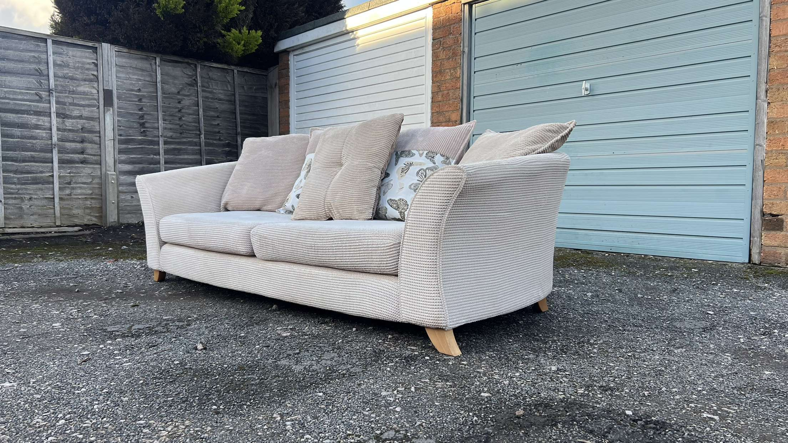

Vintage Chesterfield Sofa
£650
This classic brown leather Chesterfield sofa has been fully restored to bring back its original charm. It features new padding, polished studs, and quality craftsmanship, ensuring both comfort and style.
Perfect for adding a touch of vintage elegance to any room, this sofa makes a statement with its timeless design. Enjoy the blend of historic character and modern durability.
Back to Collection